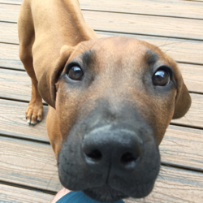
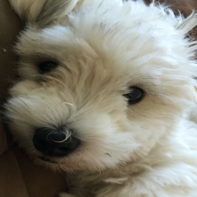
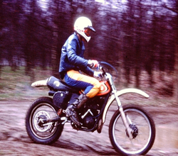

Lead mechanic: Likes to bark out orders.

Lead troublemaker: Eats what the lead mechanic drops.

Lead flunky: Does all the real work. Also repatriates parts that the lead mechanic drops and the lead troublemaker eats. This generally requires a day or two of patience and neoprene gloves.
Motorcycles we owned and rode or still ride:
1929 Harley Davidson JDL
1971 Suzuki TC120R
1972 Kawasaki F7A
1976 Honda Dax
1976 Montessa 250 VB
1977 Suzuki GT550
1977 Suzuki GS750
1980 Suzuki RM125
1980 Honda CBX
1981 Honda 900 Bol D’or
1981 Suzuki GS 1100E
1996 Honda Valkyrie